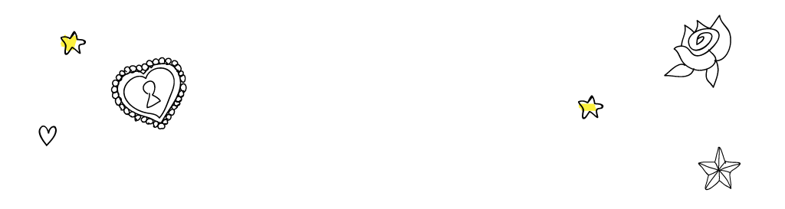
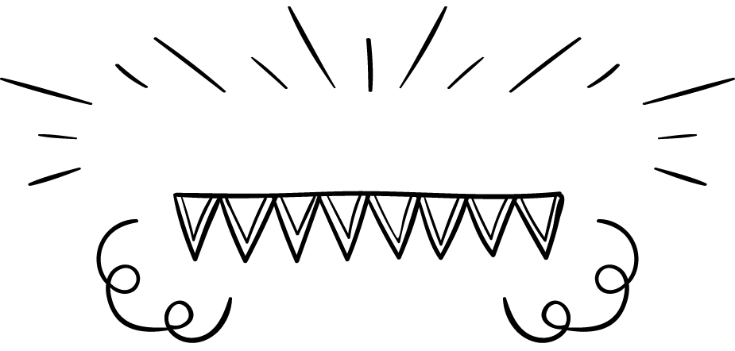
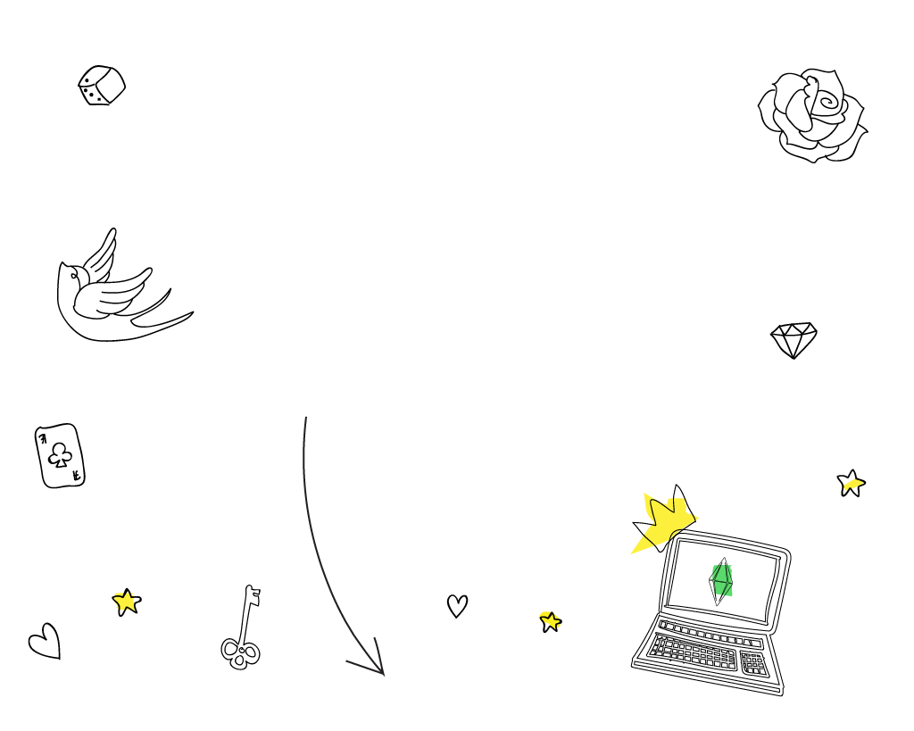
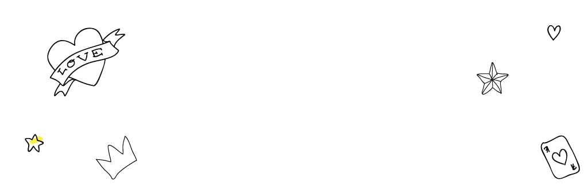
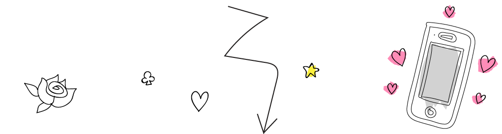
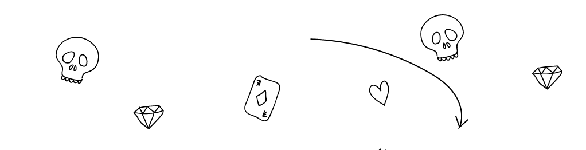
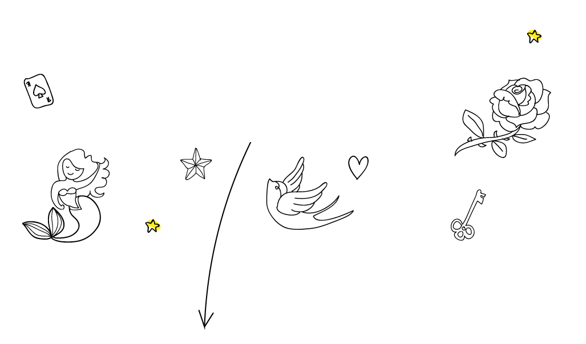
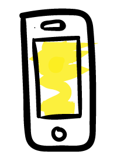

MY BORING LIFE!
HOW MY TIME IS SPENT:
(hover over sections to learn more)

TOP PROCRASTINATION TECHNIQUES:
1. Phone
2. Sims
3. Contemplating Existence

YOU'RE PROBABLY WONDERING WHAT I COULD POSSIBLY BE DOING ON MY PHONE FOR ALL THAT TIME... LET ME BREAK IT DOWN:

AS YOU MAY HAVE SUSPECTED, MY MOTIVATION AND PROCRASTINATION HAVE AN INVERSE CORRELATION:
HOW DO I DO IT????

MY EXTREME EFFORTS TO PROCRASTINATE TO MY FULLEST POTENTIAL ARE EXHAUSTING. I MUST SLEEP AT LEAST 8 HOURS EVERY NIGHT IN ORDER TO MAINTAIN SUCH A LIFESTYLE.

DAILY WATER CONSUMPTION IN OZ.
THE INTERNET SAYS I SHOULD DRINK AROUND 100 OZ. OF WATER EACH DAY. HOWEVER, MY PROCRASTINATION REQUIRES LITTLE TO NO MOVEMENT AND THEREFORE I CAN FUNCTION ON LESS THAN 50 OZ.
FINAL ESTIMATES:
ESTIMATED YEARLY WATER CONSUMPTION
14600 OZ.
ESTIMATED YEARLY SLUMBER TIME
2920 HRS.

ESTIMATED YEARLY PHONE USAGE
1095 HRS.